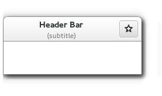

Gtk.HeaderBar
Example
Methods
| Inherited: | Gtk.Container (27), Gtk.Widget (256), GObject.Object (33), Gtk.Buildable (10) |
|---|
| static | new() |
| get_custom_title() | |
| get_decoration_layout() | |
| get_has_subtitle() | |
| get_show_close_button() | |
| get_subtitle() | |
| get_title() | |
| pack_end(child) | |
| pack_start(child) | |
| set_custom_title(title_widget) | |
| set_decoration_layout(layout) | |
| set_has_subtitle(setting) | |
| set_show_close_button(setting) | |
| set_subtitle(subtitle) | |
| set_title(title) |
Virtual Methods
| Inherited: | Gtk.Container (10), Gtk.Widget (82), GObject.Object (7), Gtk.Buildable (10) |
|---|
Properties
| Inherited: | Gtk.Container (3), Gtk.Widget (38) |
|---|
| Name | Type | Flags | Short Description |
|---|---|---|---|
| custom-title | Gtk.Widget | r/w/c | Custom title widget to display |
| decoration-layout | str | r/w | The layout for window decorations |
| decoration-layout-set | bool | r/w | Whether the decoration-layout property has been set |
| has-subtitle | bool | r/w | Whether to reserve space for a subtitle |
| show-close-button | bool | r/w | Whether to show window decorations |
| spacing | int | r/w | The amount of space between children |
| subtitle | str | r/w | The subtitle to display |
| title | str | r/w | The title to display |
Child Properties
| Name | Type | Default | Flags | Short Description |
|---|---|---|---|---|
| pack-type | Gtk.PackType | Gtk.PackType.START | r/w | A Gtk.PackType indicating whether the child is packed with reference to the start or end of the parent |
| position | int | 0 | r | The index of the child in the parent |
Style Properties
| Inherited: | Gtk.Widget (17) |
|---|
Signals
| Inherited: | Gtk.Container (4), Gtk.Widget (69), GObject.Object (1) |
|---|
Fields
| Inherited: | Gtk.Container (1), Gtk.Widget (1), GObject.InitiallyUnowned (3), GObject.Object (3) |
|---|
| Name | Type | Access | Description |
|---|---|---|---|
| container | Gtk.Container | r |
Class Details
- class Gtk.HeaderBar(**kwargs)
Bases: Gtk.Container
Gtk.HeaderBar is similar to a horizontal Gtk.Box. It allows children to be placed at the start or the end. In addition, it allows a title and subtitle to be displayed. The title will be centered with respect to the width of the box, even if the children at either side take up different amounts of space. The height of the titlebar will be set to provide sufficient space for the subtitle, even if none is currently set. If a subtitle is not needed, the space reservation can be turned off with Gtk.HeaderBar.set_has_subtitle ().
Gtk.HeaderBar can add typical window frame controls, such as minimize, maximize and close buttons, or the window icon.
- static new()
Returns: a new Gtk.HeaderBar Return type: Gtk.Widget Creates a new Gtk.HeaderBar widget.
New in version 3.10.
- get_custom_title()
Returns: the custom title widget of the header, or None if none has been set explicitly. Return type: Gtk.Widget Retrieves the custom title widget of the header. See Gtk.HeaderBar.set_custom_title ().
New in version 3.10.
- get_decoration_layout()
Returns: the decoration layout Return type: str Gets the decoration layout set with Gtk.HeaderBar.set_decoration_layout ().
New in version 3.12.
- get_has_subtitle()
Returns: True if the header bar reserves space for a subtitle Return type: bool Retrieves whether the header bar reserves space for a subtitle, regardless if one is currently set or not.
New in version 3.12.
Returns: True if the decorations are shown Return type: bool Returns whether this header bar shows the standard window decorations.
New in version 3.10.
- get_subtitle()
Returns: the subtitle of the header, or None if none has been set explicitly. The returned string is owned by the widget and must not be modified or freed. Return type: str Retrieves the subtitle of the header. See Gtk.HeaderBar.set_subtitle ().
New in version 3.10.
- get_title()
Returns: the title of the header, or None if none has been set explicitly. The returned string is owned by the widget and must not be modified or freed. Return type: str Retrieves the title of the header. See Gtk.HeaderBar.set_title ().
New in version 3.10.
- pack_end(child)
Parameters: child (Gtk.Widget) – the Gtk.Widget to be added to bar Adds child to bar, packed with reference to the end of the bar.
New in version 3.10.
- pack_start(child)
Parameters: child (Gtk.Widget) – the Gtk.Widget to be added to bar Adds child to bar, packed with reference to the start of the bar.
New in version 3.10.
- set_custom_title(title_widget)
Parameters: title_widget (Gtk.Widget or None) – a custom widget to use for a title Sets a custom title for the Gtk.HeaderBar.
The title should help a user identify the current view. This supersedes any title set by Gtk.HeaderBar.set_title () or Gtk.HeaderBar.set_subtitle (). To achieve the same style as the builtin title and subtitle, use the “title” and “subtitle” style classes.
You should set the custom title to None, for the header title label to be visible again.
New in version 3.10.
- set_decoration_layout(layout)
Parameters: layout (str or None) – a decoration layout, or None to unset the layout Sets the decoration layout for this header bar, overriding the Gtk.Settings :gtk-decoration-layout setting.
There can be valid reasons for overriding the setting, such as a header bar design that does not allow for buttons to take room on the right, or only offers room for a single close button. Split header bars are another example for overriding the setting.
The format of the string is button names, separated by commas. A colon separates the buttons that should appear on the left from those on the right. Recognized button names are minimize, maximize, close, icon (the window icon) and menu (a menu button for the fallback app menu).
For example, “menu:minimize,maximize,close” specifies a menu on the left, and minimize, maximize and close buttons on the right.
New in version 3.12.
- set_has_subtitle(setting)
Parameters: setting (bool) – True to reserve space for a subtitle Sets whether the header bar should reserve space for a subtitle, even if none is currently set.
New in version 3.12.
Parameters: setting (bool) – True to show standard widow decorations Sets whether this header bar shows the standard window decorations, including close, maximize, and minimize.
New in version 3.10.
- set_subtitle(subtitle)
Parameters: subtitle (str or None) – a subtitle, or None Sets the subtitle of the Gtk.HeaderBar. The title should give a user an additional detail to help him identify the current view.
Note that Gtk.HeaderBar by default reserves room for the subtitle, even if none is currently set. If this is not desired, set the Gtk.HeaderBar :has-subtitle property to False.
New in version 3.10.
- set_title(title)
Parameters: title (str or None) – a title, or None Sets the title of the Gtk.HeaderBar. The title should help a user identify the current view. A good title should not include the application name.
New in version 3.10.
Property Details
- Gtk.HeaderBar.props.custom_title
Name: custom-title Type: Gtk.Widget Default Value: None Flags: r/w/c Custom title widget to display
- Gtk.HeaderBar.props.decoration_layout
Name: decoration-layout Type: str Default Value: None Flags: r/w The decoration layout for buttons. If this property is not set, the Gtk.Settings :gtk-decoration-layout setting is used.
See Gtk.HeaderBar.set_decoration_layout () for information about the format of this string.
New in version 3.12.
- Gtk.HeaderBar.props.decoration_layout_set
Name: decoration-layout-set Type: bool Default Value: False Flags: r/w Set to True if Gtk.HeaderBar :decoration-layout is set.
New in version 3.12.
- Gtk.HeaderBar.props.has_subtitle
Name: has-subtitle Type: bool Default Value: True Flags: r/w If True, reserve space for a subtitle, even if none is currently set.
New in version 3.12.
Name: show-close-button Type: bool Default Value: False Flags: r/w Whether to show window decorations.
Which buttons are actually shown and where is determined by the Gtk.HeaderBar :decoration-layout property, and by the state of the window (e.g. a close button will not be shown if the window can’t be closed).
- Gtk.HeaderBar.props.spacing
Name: spacing Type: int Default Value: 6 Flags: r/w The amount of space between children